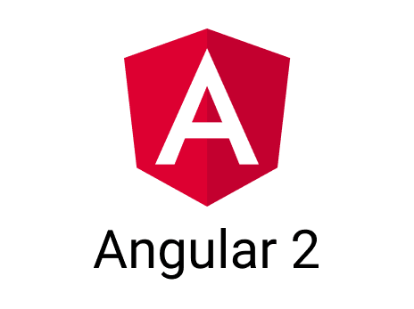

<div class="sidenav">
    <div class="logo">
        <a href="/" class="simple-text logo-mini">
            <div class="logo-img">
                
            </div>
        </a>
        <a href="/" class="simple-text logo-normal">
            Todo Manager
        </a>
    </div>
    <ul class="nav">
        <a class="active" [routerLink]="'/home'"><i class="bi bi-calendar-day"></i> Home</a>
        <a class="active" [routerLink]="'/dashboard'"><i class="bi bi-star"></i> Dashboard</a>
        <a class="active" ><i class="bi bi-calendar"></i> Menu 1</a>
        <a class="active" ><i class="bi bi-infinity"></i> Menu 2</a>
        <a class="active" ><i class="bi bi-check-circle"></i> Menu 3</a>
        <a class="active" ><i class="bi bi-person"></i> Menu 4</a>
        <a class="active"><i class="bi bi-list-task"></i> Menu 5 </a>
        <mat-divider inset vertical></mat-divider>
        <a class="spacer active" ><i class="bi bi-plus-circle"></i> Menu 6 </a>
    </ul>

</div>